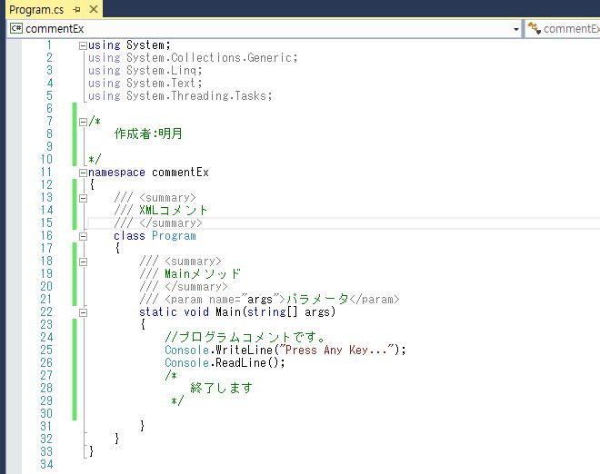

こんにちは。明月です。
前の投稿でプログラムの基本構造について勉強しました。そう見るとアセンブラーよりは読みやすいですが、人間が読みやすいには言えません。
簡単なプログラムなら解読するのが大変ではないけど、複雑度が上がるとコードを読むのがだんだん大変になると思いますね。
それでプログラムをコーディング式ではなく、人が読みやすい方法でコメントがあります。
プログラム中でコメントを付ける方法は３つがあります。
改行タイプのコメントです。使用方法は改行頭に「//」を付けて使います。
//コメント例です。
次はブロックタイプのコメントがあります。使用方法は下記とおりです。
/*
コメント例です。
これはブロックタイプでございます。
*/
ブロックタイプのコメントは重複処理ができないので、使用するときに注意が必要です。
/*
コメント例です。
これはブロックタイプでございます。
/* コメント重複*/
//エラーになります。
*/
最後にXMLコメントがあります。XMLコメントはプロジェクトが終了する時にXMLコメントでマニュアルを生成できるコメントです。Javaの場合はJavadocと同じコメントです。
(でも実際にXMLコメントでマニュアルまで生成しません。機能としてはありますが…)
使用方法はClass頭あるいはMethod頭で「///」を付けて使います。
namespace commentEx
{
///<summary>
/// XMLコメント
/// </summary>
class Program
{
/// <summary>
/// Mainメソッド
/// </summary>
/// <param name="args">パラメータ</param>
static void Main(string[] args)
{
}
}
}
XMLコメントの場合各タグがあって、タグ別で説明する区切りがあります。下記の表を参考してください。
| XMLコメントタグ | 説明 |
|---|---|
| summary | 形式あるいは形式メンバ設定 |
| remarks | 詳細な説明 |
| para | remarksの追加説明 |
| value | プロパティの説明 |
| example | 使用例 |
| list | リストとテーブル生成 |
| code | 何行目のコードで表示する時に使用 |
| see | テキスト内部のリンク指定 |
| seealso | 参考部分に表せるテキスト指定 |
| exception | 例外説明 |
| permision | 接近権限説明 |
| param | メソッドのパラメター説明 |
| return | 返却値を説明 |
| c | 説明中で含めているコード |
プロジェクトを進める時に簡単なプログラムは一人で作成できますが、普通のプロジェクトならチームを組んで進めると思います。その時にメンバ間にコミュニケーションが合わないとプロジェクトがうまく進めると思わないですね。
また、プロジェクトが完了できて、数月を過ぎて後にバージョンアップがあることやバグが発生してメンテが必要な時にソース内容を覚えると問題がないですが、逆に仕様を忘れてしまうケースがありますね。
そのためにXMLコメントを利用してプロジェクトあるいはクラス、メソッドの説明を書いておいて、コミュニケーション、メンテ、仕様整理する時に利用すると良いと思います。

XMLコメント以外に改行コメント、ブロックコメントはC#ではなく、C言語、Javaにも同じ形式で使えますね。コメントはプログラムの勉強を始まる時に学ぶ重要な部分なのでちゃんと覚えていきましょう。
- [C#] ソケット(Socket)通信をする方法2020/05/13 17:37:13
- [C#] Thread(スレッド)2019/07/24 00:57:35
- [C#] 「IDisposable」と「using」2019/07/23 00:05:40
- [C#] ファイルシステム(File System) - FileStream、 Encoding、 Serializable2019/07/22 23:45:05
- [C#] ファイルシステム(File System) - FileInfo,DirectoryInfo2019/07/22 23:30:17
- [C#] MSDN(Microsoft Developer Network)2019/07/22 23:15:42
- [C#] Attribute(アトリビュート)2019/07/20 02:27:23
- [C#] Reflection(リフレクション)2019/07/20 02:22:03
- [C#] Objectタイプ、varタイプ(匿名タイプ)、dynamicタイプ2019/07/18 22:50:16
- [C#] Partial Type(クラス分割)、拡張メソッド2019/07/18 20:22:16
- [C#] Lamda(ラムダ)2019/07/17 23:06:42
- [C#] LINQ(リンク)-3 (Enumerableクラス)2019/07/17 20:57:00
- [C#] LINQ(リンク)-2 (メソッド式)2019/07/16 22:40:03
- [C#] LINQ(リンク)-12019/07/16 20:41:27
- [C#] event(イベント)2019/07/16 00:59:34
- [Python] ファイル圧縮、解凍(zipfile)する方法2020/07/14 19:14:22
- [Python] Apache cgiでPythonを使う方法2020/07/09 19:58:19
- [Python] Web serverを起動する方法(http.server)2020/07/09 00:13:13
- [Python] WebSocketを使う方法2020/07/07 17:29:18
- [Python] PythonとJavaのソケット通信する方法2020/07/03 18:35:50
- [Python] PythonとC#のソケット通信2020/07/01 19:28:22
- [Python] INI(環境設定ファイル)を扱う方法2020/06/30 18:26:01
- [Python] Jsonを扱う方法2020/06/29 19:18:15
- [Python] XMLファイルを扱う方法2020/06/26 19:18:14
- [Python] IOを利用してCSVファイルを扱う方法2020/06/25 18:20:30
- [Python] 21. データベース(mariaDB)を連結する方法2020/06/24 18:51:50
- [Python] 20. stringフォマード(Formatting)と補間法(interpolation)2020/06/23 19:03:21
- [Python] 19. 非同期IOのasync/await(asyncio)を使う方法2020/06/22 18:10:12
- [Python] 18. ネットワーク(Socket)通信する方法2020/06/18 19:53:56
- [Python] 17. スレッド(Thread)とロック(lock)、そしてデッドロック(deadlock)2020/06/18 00:19:45